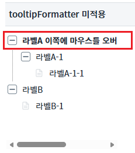
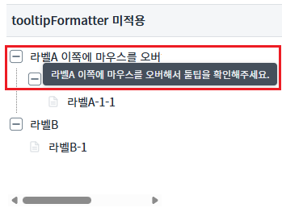
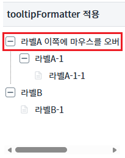
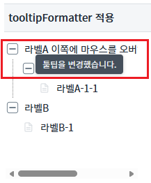
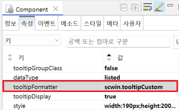

Treeview의 'tooltipFormatter' 속성을 사용하여 노드의 툴팁을 사용자가 설정하는 예제입니다.
기본 툴팁 설정하기
사용자 툴팁 설정하기
이 기능은 마우스 사용이 가능한 환경에서 확인할 수 있습니다.
1
STEP 1: '라벨A 이쪽에 마우스를 오버해서 툴팁을 확인해주세요.' 노드에 마우스를 올려둡니다.
Image 1.브라우저(Chrome) 실행 예시

2
STEP 2: 실행된 결과를 확인합니다.
툴팁이 표시됩니다. 툴팁에 표시되는 문자열은 '라벨A 이쪽에 마우스를 오버해서 툴팁을 확인해주세요.'입니다.
Image 2.브라우저(Chrome) 실행 예시

이 기능은 마우스 사용이 가능한 환경에서 확인할 수 있습니다.
1
STEP 1: '라벨A 이쪽에 마우스를 오버해서 툴팁을 확인해주세요.' 노드에 마우스를 올려둡니다.
Image 3.브라우저(Chrome) 실행 예시

2
STEP 2: 실행된 결과를 확인합니다.
툴팁이 표시됩니다. 툴팁에 표시되는 문자열은 '툴팁을 변경했습니다.'입니다.
Image 4.브라우저(Chrome) 실행 예시

1
Treeview의 속성을 정의합니다.
[필수] tooltipFormatter="반환값을 설정할 함수명"
(옵션 설명)
tooltipDisplay속성이 true일 때 데이터를 표현 할 tooltip의 내용을 변경 할 사용자 함수명.
사용자 함수에서는 label, nodeIndex, isOverflow을 인자로 받아 tooltip에 표현 할 string을 return한다.
(예시)
tooltipFormatter = "scwin.tooltipCustom"과 같이 함수명을 text 형식으로 입력한다.
[필수] tooltipDisplay="true"
노드 툴팁 표시를 활성화합니다. 3.1의 '기본 툴팁 설정하기'는 해당 속성을 true로 적용하면 사용가능하다.
Image 5.웹스퀘어 스튜디오의 Component View 예시 - 함수명 추가

Example 1.Source
<!-- Treeview 의 소스 본문 예시 --> <w2:treeview tooltipDisplay="true" tooltipFormatter="scwin.tooltipCustom"> <!-- 중략 --> </w2:treeview>
tooltipFormatter
tooltipDisplay